RTR: Imperium Surrectum
RTR: Imperium SurrectumThe Bosporan Kingdom units
2023-01-11 · ahowl11
Hello! Today we present to you another Dev Diary. This one is actually one of my personal favorite factions, and in years past, modding RTW I always tried to get them in my mods. This faction has a mystery to it, as we don't have a ton of information on them, but luckily we were able to dig up enough information by finding a very nice book on them. That book pretty much constructed the roster for us by giving us all accounts of their military in history and archaeology. Today, we bring to you: The Bosporan Kingdom!
AKONTISTAI
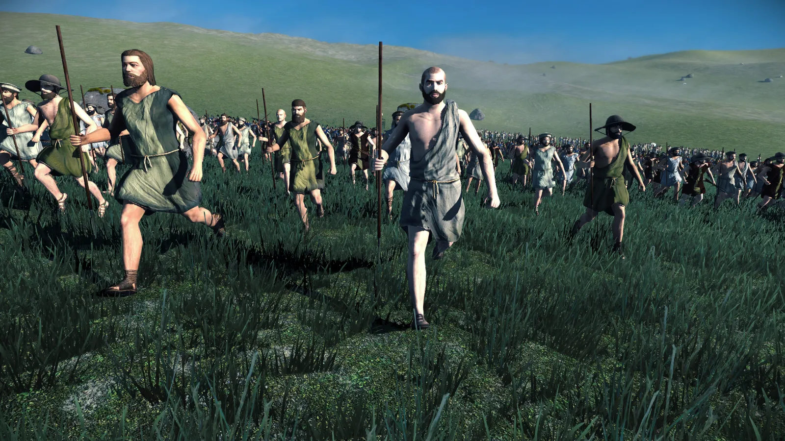
ARCHERS
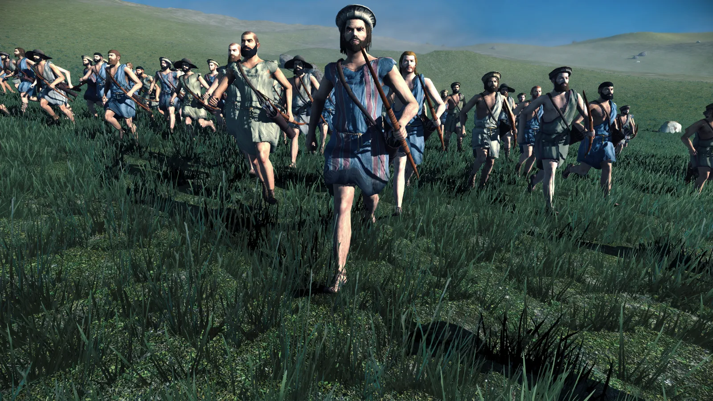
GREEK PELTASTS
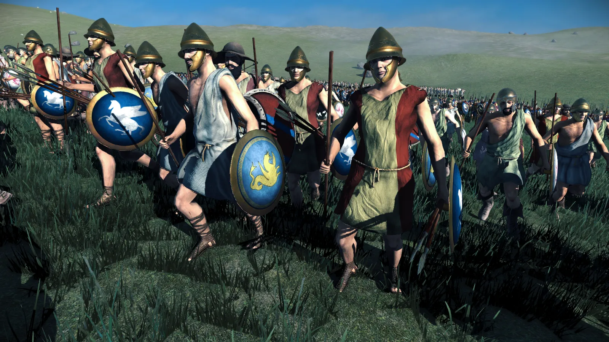
BOSPORAN HOPLITES
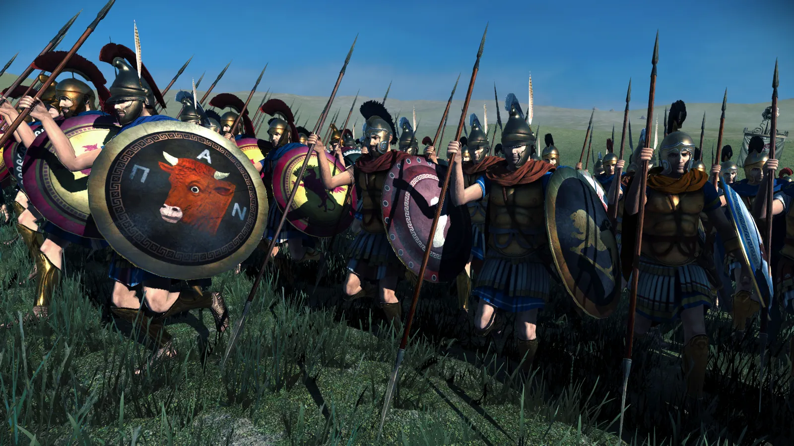
BOSPORAN MACHAIRAPHOROI
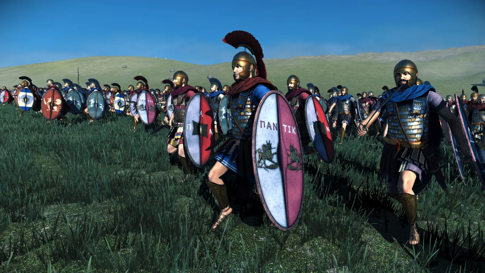
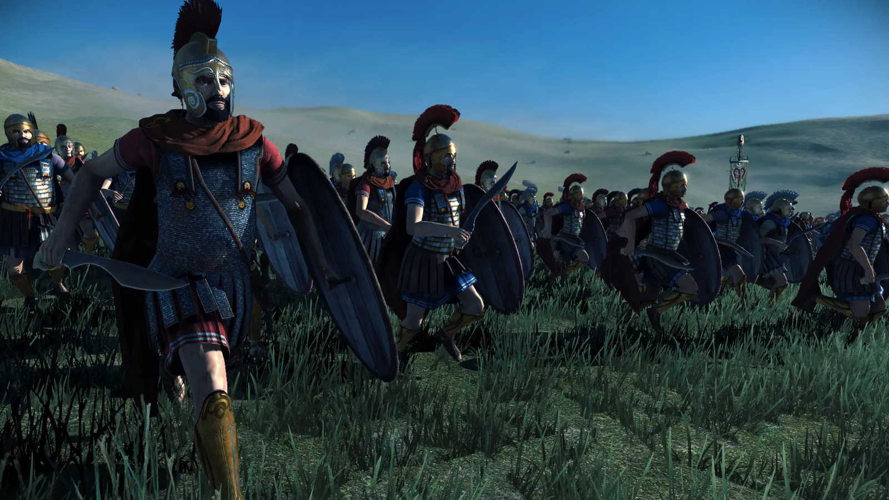
THUREOPHOROI CAVALRY
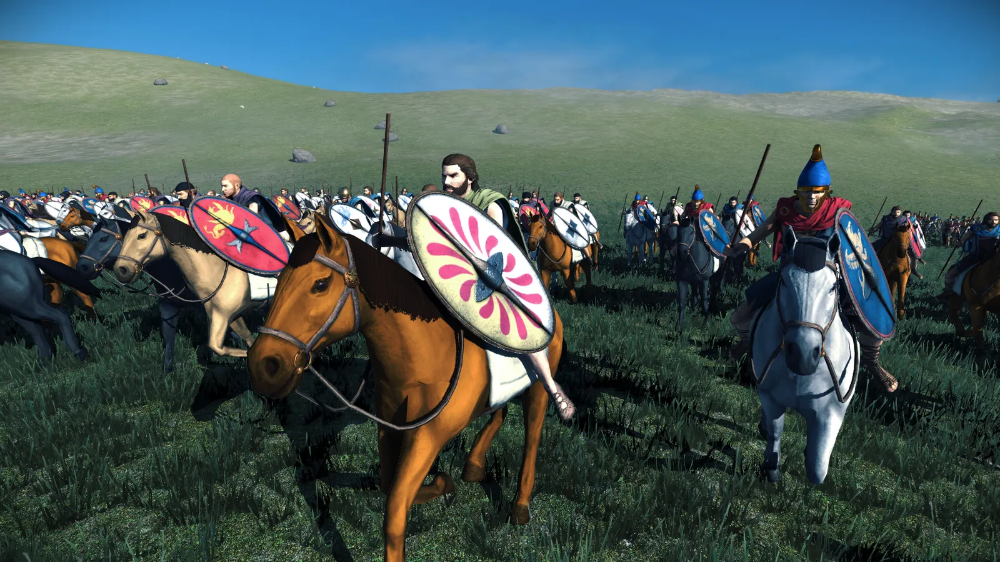
THRACIAN PELTASTS
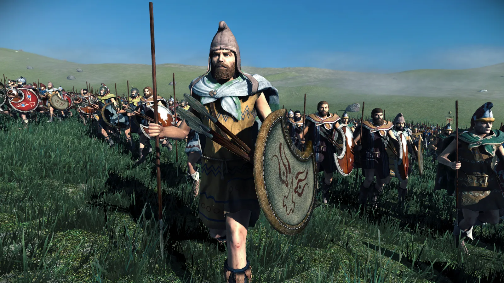
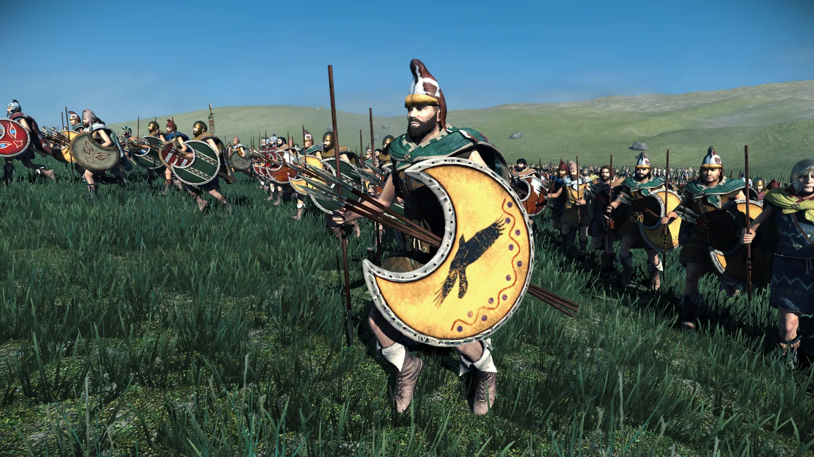
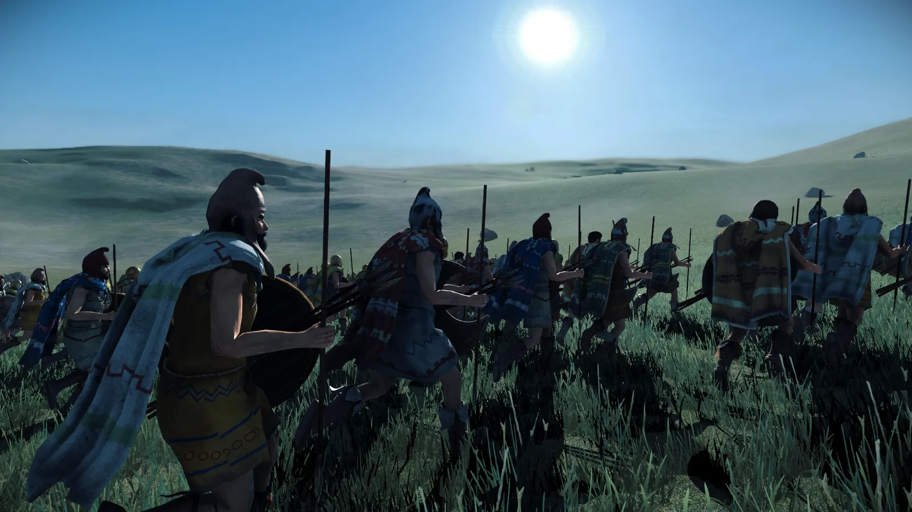
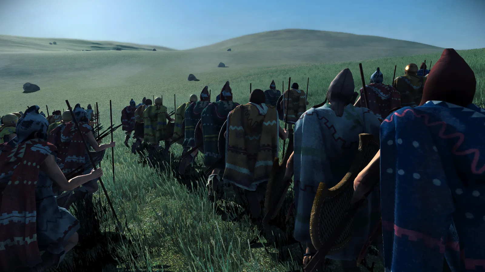
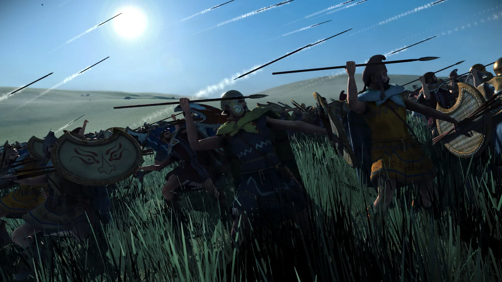
ACTION SHOTS
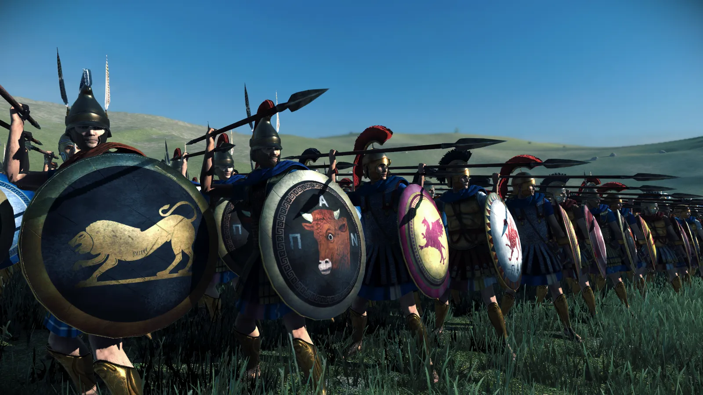
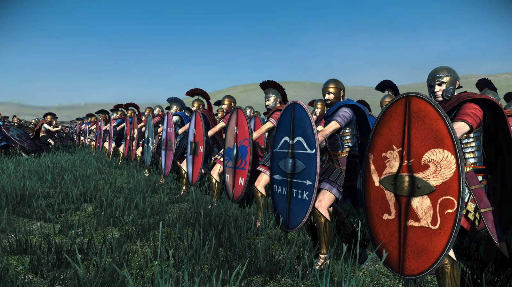
So, the Bosporan Roster is actually more diverse than what we have presented today. Today showcased the Greek side of their roster, as well as the Thracians that they frequently hired and recruited. They have a whole other Scythian and Sarmatian side to their roster. However, we have zero assets for those cultures made, and won't have them made until we get to those factions and cultures. To understand the Bosporan Roster better, please take a look at this book! https://www.amazon.com/Army-Bosporan-Kingdom-Mariusz-Mielczarek/dp/8385874038/ref=sr_1_1?crid=2REA57B3OIG48&keywords=The+Bosporan+Army&qid=1673450448&sprefix=the+bosporan+army%2Caps%2C134&sr=8-1
Also, I would like to say that this concludes our Hellenistic and Greek Remaster work for our current faction list! It's taken almost a full year to make all of these units. Countless models and textures have been made to give each unit 7 variants of soldier. I'd like to give a big shout out to @tony25931 and the that have worked with him. If it wasn't for their efforts and system implementation, these units wouldn't be made. Also another shoutout must go to @Mausolos of Mylasa and the for all the hours of research that they have put in!
Finally, to conclude the Hellenistic/Greek factions.. I would like to address the 'boring' aspect.. The fun is in the details. Most of these units do look similar on the surface, but there is a distinctness about each of these units based on the factions they fight for. Shields are the biggest part of showing what these units represent, whether it's traditional Greek Symbolism, Dynastic Identities, The Gods that the faction associated itself with, or the faction symbols that these peoples implemented on their coinage. Also, many different helmet styles, shield sizes etc have been made exclusively for certain units. One thing to understand, is the Greeks were super diverse politically, but not so much culturally or militarily. That's why many of these rosters appear similar. We want to replicate history the best we can, and that's what we have done with our units! The next groupings of units you will see, will be a bit more diverse and unique. We are working on them now, and will be excited to showcase them soon. Who are they? You will have to wait and find out!